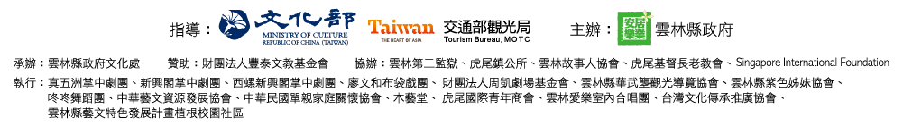

<!DOCTYPE HTML>
<!--
	Helios by HTML5 UP
	html5up.net | @ajlkn
	Free for personal and commercial use under the CCA 3.0 license (html5up.net/license)
-->
<html>

<head>
	<title>2018雲林國際偶戲節</title>
	<meta charset="utf-8" />
	<meta name="viewport" content="width=device-width, initial-scale=1, user-scalable=no" />
	<meta name="description" content="2018雲林國際偶戲節系列活動 【9/1(六)~10/28(日) 19:30~21:00 偶戲行腳】【10/6(六)~10/13(四)雲林國際偶戲節">
	<meta name="keywords" content="2018雲林國際偶戲節官方網站,2018雲林縣, 2018偶戲節,偶戲節,2018puppet, 偶戲行腳,偶戲節系列活動,雲林縣政府文化處, 虎尾布袋戲館, 雲林縣虎尾鎮, 雲林縣活動, 雲林生態園區, 雲林故事館">
	<link rel="stylesheet" href="assets/css/main.css" />
	<noscript>
		<link rel="stylesheet" href="assets/css/noscript.css" /></noscript>
</head>

<body class="homepage is-preload">
	<div id="page-wrapper">

		<!-- Header -->
		<div id="header">


			<!-- Nav -->
			<nav id="nav">
				<ul>
					<li class="current"><a href="#">首頁</a></li>
					<li><a href="about.html">關於偶戲節</a></li>
					<li><a href="#.html">偶戲行腳</a></li>
					<li>
						<a href="#">表演團隊</a>
						<ul>
							<li><a href="#.html">偶戲行腳團隊</a></li>
							<li><a href="International-tam.html">國際表演團隊</a></li>
						</ul>
					</li>
					<li>
						<a href="Playbill-all.html">節目總表</a>
						<ul>
							<li><a href="#.html">偶戲行腳</a></li>
							<li><a href="#.html">國際偶戲節</a></li>
						</ul>
					</li>
					<li><a href="tourism.html">小遊虎尾</a></li>
				</ul>
			</nav>

		</div>

		<!-- Banner -->
		<section id="banner">
			<header>
				<h2><strong>雲林</strong>,台灣布袋戲的故鄉。</h2>
				<p><a href="about.html" class="center button circled scrolly">進入 Enter</a></p>
			</header>
			
		</section>

		<!-- Footer -->
		<div id="footer">
			<div class="container">


				<div class="row">
					<div class="col-12">

						<!-- Contact -->
						<section class="contact">


							<header>
								<a href="#" class="image featured"></a>
							</header>
							<ul class="icons">

								<li><a href="https://www.facebook.com/ylccb.gov.tw/" class="icon fa-facebook"><span class="label">Facebook</span></a></li>

								<li><a href="https://www.instagram.com/explore/tags/%E9%9B%B2%E6%9E%97%E5%9C%8B%E9%9A%9B%E5%81%B6%E6%88%B2%E7%AF%80/?hl=zh-tw"
									 class="icon fa-instagram"><span class="label">Instagram</span></a></li>
							</ul>
						</section>


						<!-- Copyright -->
						<div class="copyright">
							<ul class="menu">
								<li> Copyright &copy; 2018 雲林縣政府文化處版權所有｜電話:05-5523160｜地址:雲林縣斗六市大學路三段310號</li>
							</ul>
						</div>

					</div>

				</div>
			</div>
		</div>

	</div>

	<!-- Scripts -->
	<script src="assets/js/jquery.min.js"></script>
	<script src="assets/js/jquery.dropotron.min.js"></script>
	<script src="assets/js/jquery.scrolly.min.js"></script>
	<script src="assets/js/jquery.scrollex.min.js"></script>
	<script src="assets/js/browser.min.js"></script>
	<script src="assets/js/breakpoints.min.js"></script>
	<script src="assets/js/util.js"></script>
	<script src="assets/js/main.js"></script>

</body>

</html>